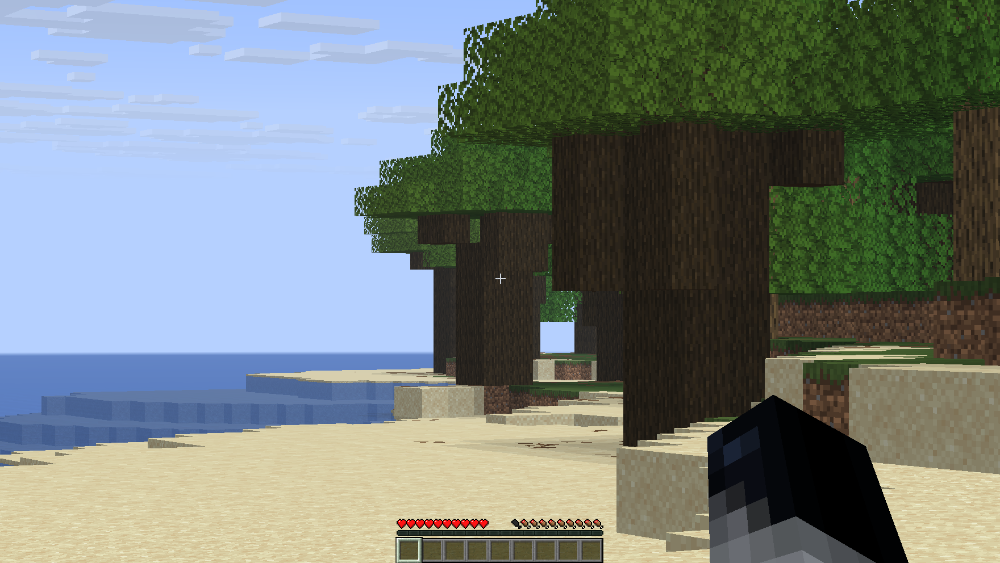
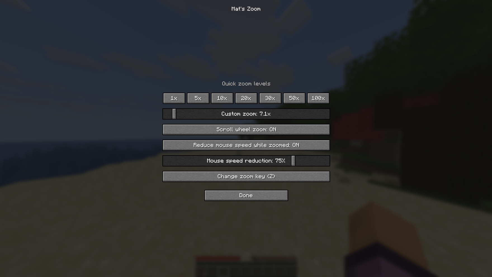

Fabric Mod for Minecraft
Mat's Zoom
Tired of not being able to see what is in the distance?
With Mat's Zoom, you can smoothly zoom from
1× all the way up to 100×
without leaving Minecraft.
Easily adjust your zoom level with a slider,
customize your keybinds and choose your preferred
mouse sensitivity while zoomed in.
Lightweight, highly customizable and built to feel
like a natural part of vanilla Minecraft.
How to use:
Zoom key is set to "Z" as standard, but you can always change it by typing /matszoom.


Features
Why Choose Mat's Zoom?
Smooth Zoom
Beautiful zoom animation with adjustable speed.
Adjustable Magnification
Zoom from 1× up to 100× using an easy slider.
Custom Keybind
Choose any key you want to activate zoom.
Scroll Zoom
Change zoom level instantly using your mouse wheel.
Lightweight
Designed to have almost no performance impact.
Vanilla Friendly
Looks and feels like an official Minecraft feature.